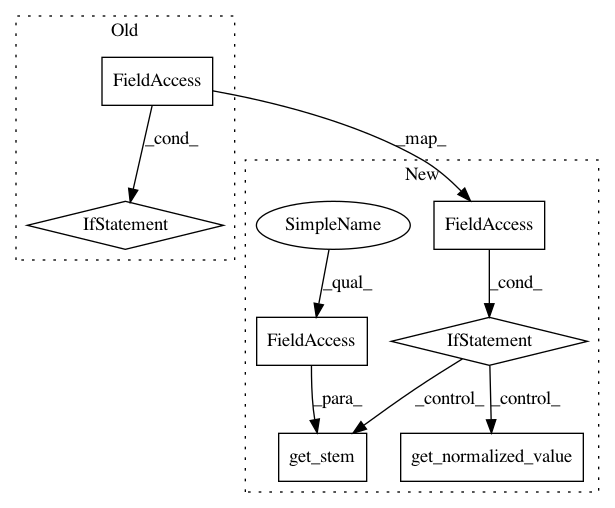

fef775c565e74cf5481ebcd92a291d8c155b07e9,snips_nlu/slot_filler/feature_factory.py,WordClusterFactory,compute_feature,#WordClusterFactory#Any#Any#,334
Before Change
self.language = dataset[LANGUAGE]
def compute_feature(self, tokens, token_index):
normalized_value = tokens[token_index].stem if self.use_stemming \
else tokens[token_index].normalized_value
cluster = get_word_clusters(self.language)[self.cluster_name]
return cluster.get(normalized_value, None)
After Change
self.language = dataset[LANGUAGE]
def compute_feature(self, tokens, token_index):
if self.use_stemming:
value = tokens[token_index].get_stem(self.language)
else:
value = tokens[token_index].get_normalized_value()
cluster = get_word_clusters(self.language)[self.cluster_name]
return cluster.get(value, None)
In pattern: SUPERPATTERN
Frequency: 3
Non-data size: 7
Instances
Project Name: snipsco/snips-nlu
Commit Name: fef775c565e74cf5481ebcd92a291d8c155b07e9
Time: 2018-07-10
Author: Adrien@MacBook-Pro-de-Adrien.local
File Name: snips_nlu/slot_filler/feature_factory.py
Class Name: WordClusterFactory
Method Name: compute_feature
Project Name: snipsco/snips-nlu
Commit Name: fef775c565e74cf5481ebcd92a291d8c155b07e9
Time: 2018-07-10
Author: Adrien@MacBook-Pro-de-Adrien.local
File Name: snips_nlu/slot_filler/feature_factory.py
Class Name: NgramFactory
Method Name: compute_feature
Project Name: snipsco/snips-nlu
Commit Name: fef775c565e74cf5481ebcd92a291d8c155b07e9
Time: 2018-07-10
Author: Adrien@MacBook-Pro-de-Adrien.local
File Name: snips_nlu/slot_filler/feature_factory.py
Class Name: EntityMatchFactory
Method Name: _transform